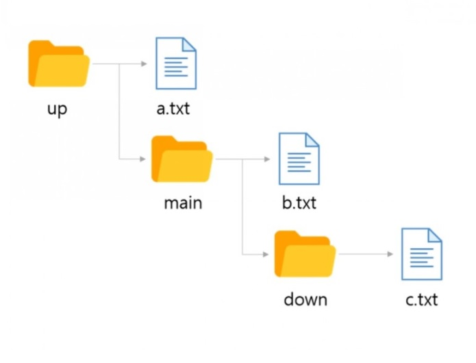
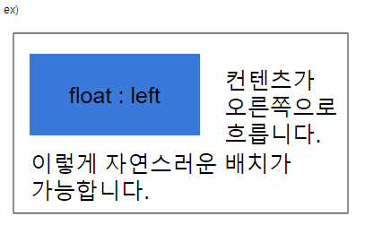

CSS
CSS(Cascading Style Sheets)는 HTML로 작성된 문서를 쓰기 위한 스타일 시트 언어입니다.
HTML은 문서의 골격을 이룬다면, CSS는 그 골격에 맞는 디자인 작업 언어라고 생각하면 됩니다.
CSS 선택자
CSS 선택자를 통해 요소를 선택하고 속성을 줄 수 있습니다.

id 선택자와 Class 선택자
- id 선택자
- 하나의 태그만 식별하기 위한 선택자입니다.
- 하나의 태그에서 하나만 사용할 수 있습니다.
"#"으로 표시합니다.
- Class 선택자
- 여러개의 태그를 식별하기 위한 선택자입니다.
- 하나의 태그에서 여러개를 사용할 수 있습니다.
"."으로 표시합니다.
CSS
CSS는 선택자를 통해 요소를 선택할 수 있습니다.
기본 선택자
| 종류 | 예시 | 이름 |
|---|---|---|
| 태그 선택자 | p {color:#fff;} | p 태그를 선택하여 글씨 색을 하얀색으로 변경합니다. |
| 클래스 선택자 | .class {color:#fff;} | class 클래스를 선택하여 글씨 색을 하얀색으로 변경합니다. |
| 아이디 선택자 | #id {color:#fff;} | id 아이드를 선택하여 글씨 색을 하얀색으로 변경합니다. |
| 그룹 선택자 | p, div {color:#fff;} | p 태그와 div 태그를 선택하여 글씨 색을 하얀색으로 변경합니다. |
| 전체 선택자 | * {color:#fff;} | 전체 태그를 선택하여 글씨 색을 하얀색으로 변경합니다. |
계층 선택자
| 종류 | 예시 | 이름 |
|---|---|---|
| 하위 선택자(Descendant Selector) | div p {color:#fff;} | div 태그의 모든 자식 중 p 태그를 모두 선택하여 글씨 색을 하얀색으로 변경합니다. |
| 자식 선택자(Child Selector) | div > p {color:#fff;} | div 태그의 모든 자식 중 첫번째 자식 p 태그를 선택하여 글씨 색을 하얀색으로 변경합니다. |
| 형제 선택자(sibling Selector) | div ~ p {color:#fff;} | div 태그의 인접한 형제 p 태그를 모두 선택하여 글씨 색을 하얀색으로 변경합니다. |
| 인접 형제 선택자(Adjacent Sibling Selector) | div + p {color:#fff;} | div 태그의 인접한 형제 첫번째 p 태그를 선택하여 글씨 색을 하얀색으로 변경합니다. |
속성 선택자
| 종류 | 예시 | 이름 |
|---|---|---|
| [name] | a[href] | a 태그 속성 중에 href가 있으면 선택합니다. |
| [name="value"] | a[href="#header"] | a 태그 href 속성의 값이 '#header'이면 선택합니다. |
| [name~="value"] | a[href~="web"] | a 태그 href 속성의 값이 'web'을 포함한 요소를 선택합니다. |
| [name|="value"] | a[href|="web"] | a 태그 href 속성의 값이 'web'이거나 'web'으로 시작하는 요소를 선택합니다. |
| [name^="value"] | a[href^="web"] | a 태그 href 속성의 값이 'web'으로 시작하는 태그를 선택합니다. |
| [name*="value"] | a[href*="web"] | a 태그 href 속성의 값이 'web'이 포함되어 있는 태그를 선택합니다. |
| [name$="value"] | a[href$="com"] | a 태그 href 속성의 값이 'com'으로 끝나는 태그를 선택합니다. |
가상 요소
| 종류 | 예시 | 이름 |
|---|---|---|
| ::first-line | p:first-line {color:#fff;} | 문단의 첫 줄에 컬러색을 하얀색으로 변경합니다. |
| ::first-letter | p:first-letter {color:#fff;} | 문단의 첫 글자에 컬러색을 하얀색으로 변경합니다. |
| ::before | p:before {content:"시작"} | 문단 시작 부분에 '시작'이라는 요소를 추가합니다. |
| ::after | p:after {content:"끝"} | 문단 끝 부분에 '끝'이라는 요소를 추가합니다. |
| ::selection | p:selection {color:#fff;} | 드래그로 선택하였을 경우 글씨 색을 하얀색으로 변경합니다. |
가상 클래스
| 종류 | 예시 | 이름 |
|---|---|---|
| :first-child | li:first-line {color:#fff;} | li 자식 요소 중 첫 번째 자식 요소에게 컬러를 하얀색으로 변경합니다. |
| :last-child | li:last-line {color:#fff;} | li 자식 요소 중 마지막 번째 자식 요소에게 컬러를 하얀색으로 변경합니다. |
| :first-of-type | p:first-of-type {color:#fff;} | 자식 요소 중 p 태그 첫 번째 자식 요소에게 컬러를 하얀색으로 변경합니다. |
| :last-of-type | p:last-of-type {color:#fff;} | 자식 요소 중 p 태그 마지막 번째 자식 요소에게 컬러를 하얀색으로 변경합니다. |
| :nth-child() | li:nth-child(2) {color:#fff;} | li 자식 요소 중 2번째 자식 요소에게 컬러를 하얀색으로 변경합니다. |
| :nth-last-child() | li:nth-last-child(2) {color:#fff;} | li 자식 요소 중 뒤에서 2번째 자식 요소에게 컬러를 하얀색으로 변경합니다. |
| :nth-of-type() | p:nth-of-type(2) {color:#fff;} | 자식 요소 중 p 태그 2번째 자식 요소에게 컬러를 하얀색으로 변경합니다. |
| :nth-last-of-type() | p:nth-last-of-type(2) {color:#fff;} | 자식 요소 중 p 태그 뒤에서 2번째 자식 요소에게 컬러를 하얀색으로 변경합니다. |
| :only-child | :only-child {color:#fff;} | 자식 요소 중 유일한 태그 자식 요소에게 컬러를 하얀색으로 변경합니다. |
| :only-of-type | p:only-of-type {color:#fff;} | 자식 요소 중 유일한 p 태그 자식 요소에게 컬러를 하얀색으로 변경합니다. |
| :not() | li:not(:nth-child(2)) {color:#fff;} | li 자식 요소 중 2번째 자식 요소를 제외하고 컬러를 하얀색으로 변경합니다. |
| :root | :root {color:#fff;} | 기본 루트 요소의 컬러를 하얀색으로 변경합니다. |
| :empty | :empty {color:#fff;} | 컨텐츠 요소가 없는 요소의 컬러를 하얀색으로 변경합니다. |
링크 가상 클래스
| 종류 | 예시 | 이름 |
|---|---|---|
| :link | a:link {color:#fff;} | 방문하지 않는 링크의 글씨 색을 하얀색으로 설정합니다. |
| :visited | a:visited {color:#fff;} | 방문한 링크의 글씨 색을 하얀색으로 설정합니다. |
| :hover | a:hover {color:#fff;} | 링크 위에 마우스를 올려 놓았을 경우 글씨 색을 하얀색으로 설정합니다. |
| :active | a:active {color:#fff;} | 링크가 활성화되었을 경우 글씨 색을 하얀색으로 변경합니다. |
폼 관련 선택자
| 종류 | 예시 | 이름 |
|---|---|---|
| :checked | input:checked {color:#fff;} | input 태그가 체크되었을 때 글씨 색을 하얀색으로 변경합니다. |
| :focus | input:link {color:#fff;} | input 태그에 초점이 맞추어졌을 때 글씨 색을 하얀색으로 변경합니다. |
| :enabled | input:enabled {color:#fff;} | input 태그가 사용 가능하면 글씨 색을 하얀색으로 변경합니다. |
| :disabled | input:disabled {color:#fff;} | input 태그가 사용 가능하지 않으면 글씨 색을 하얀색으로 변경합니다. |
CSS Selector
| 태그 | 유형 | 설명 | 버전 |
|---|---|---|---|
| . | .class {color:#fff;} | 클래스 선택자 | CSS1 |
| # | .id {color:#fff;} | 아이디 선택자 | CSS1 |
| * | * {color:#fff;} | 전체 선택자 | CSS2 |
| element | p {color:#fff;} | 요소 선택자 | CSS1 |
| element, element | p, div {color:#fff;} | 그룹 선택자 | CSS1 |
| element element | div p {color:#fff;} | 후손 선택자 | CSS1 |
| element > element | div > p {color:#fff;} | 이웃 선택자 | CSS2 |
| element + element | div > p {color:#fff;} | 자식 선택자 | CSS2 |
| element ~ element | div ~ p {color:#fff;} | 형제 선택자 | CSS3 |
| [attribute] | p [class] {color:#fff;} | 속성 선택자 | CSS2 |
| [attribute=value] | p [class="white"] {color:#fff;} | 속성 선택자 | CSS2 |
| [attribute~=value] | p [class~="white"] {color:#fff;} | 속성 선택자 | CSS2 |
| [attribute^=value] | p [attr^="w"] {color:#fff;} | 속성 선택자 | CSS3 |
| [attribute*=value] | p [attr*="white"] {color:#fff;} | 속성 선택자 | CSS3 |
| [attribute$=value] | p [attr$="w"] {color:#fff;} | 속성 선택자 | CSS3 |
| :link | a:link {color:#fff;} | 방문하지 않은 링크 | CSS1 |
| :visited | a:visited {color:#fff;} | 방문한 링크 | CSS1 |
| :hover | a:hover {color:#fff;} | 마우스 오버 링크 | CSS1 |
| :active | a:active {color:#fff;} | 활성화된 링크 | CSS1 |
| :focus | a:focus {color:#fff;} | 포커스된 링크 | CSS2 |
| :root | a:root {color:#fff;} | 문서의 루트 요소 | CSS3 |
| :nth-child(n) | p:nth-child(3) {color:#fff;} | n번째 스타일 적용 | CSS3 |
| :nth-last-child(n) | p:nth-last-child(n) {color:#fff;} | 끝에서 n번째 스타일 적용 | CSS3 |
| :nth-of-type(n) | p:nth-of-type(n) {color:#fff;} | n번째 스타일 적용 | CSS3 |
| :nth-last-of-type(n) | p:nth-last-of-type(n) {color:#fff;} | 끝에서 n번째 스타일 적용 | CSS3 |
| ::first-letter | p::first-letter {color:#fff;} | 첫 번째 문장 | CSS1 |
| ::first-line | p::first-line {color:#fff;} | 첫 번째 줄 | CSS1 |
| :first-of-type | p:first-of-type {color:#fff;} | 첫 번째 요소의 선택자 | CSS3 |
| :last-of-type | p:last-of-type {color:#fff;} | 마지막 번째 요소의 선택자 | CSS3 |
| :only-of-type | p:only-of-type {color:#fff;} | 해당 요소가 유일한 요소의 선택자 | CSS3 |
| :first-child | p:first-child {color:#fff;} | 첫 번째 자식요소 | CSS3 |
| :last-child | p:last-child {color:#fff;} | 마지막 자식요소 | CSS3 |
| :only-child | p:only-child {color:#fff;} | 자식요소가 유일하게 하나일 때 | CSS3 |
| :only-of-child | p:only-of-child {color:#fff;} | 해당 요소가 유일한 요소 일 때 | CSS3 |
| :target | :target {color:#fff;} | 연결 | CSS3 |
| :enabled | input[type="text"]:enabled {color:#fff;} | 사용할 수 있는 상태 | CSS3 |
| :disabled | input[type="text"]:disabled {color:#fff;} | 사용할 수 없는 상태 | CSS3 |
| :checked | input:checked {color:#fff;} | 체크된 상태 | CSS3 |
| :in-range | input:in-range {color:#fff;} | 인풋 요소의 라인을 설정합니다. | CSS3 |
| :out-of-range | input:out-of-range {color:#fff;} | 인풋 요소의 아웃라인을 설정합니다. | CSS3 |
| :valid | input:valid {color:#fff;} | 인풋 요소가 유효할 때 설정됩니다. | CSS3 |
| :invalid | input:invalid {color:#fff;} | 인풋 요소가 유효하지 않을 때 설정됩니다. | CSS3 |
| :optional | input:optional {color:#fff;} | 인풋 요소의 옵션에 설정됩니다. | CSS3 |
| :read-only | input:read-only {color:#fff;} | 인풋 요소를 읽었을 때 설정됩니다. | CSS3 |
| :read-write | input:read-write {color:#fff;} | 인풋 요소를 쓸 때 설정됩니다. | CSS3 |
| :input:required | input:required {color:#fff;} | 인풋 요소가 필수 일 때 설정됩니다. | CSS3 |
| :lang(language) | p:lang(it) {color:#fff;} | 언어설정에 따라 설정됩니다. | CSS2 |
| :empty | p:empty {color:#fff;} | 빈 상태 | CSS3 |
| ::before | p::before {content: "content";} | 요소 앞에 내용 추가 | CSS3 |
| ::after | p::after {content: "content";} | 요소 뒤에 내용 추가 | CSS3 |
| ::selection | ::selection {color:#fff;} | 마우스로 선택했을 때 | CSS3 |
| :not(seletor) | :not(p) {color:#fff;} | 제외한 | CSS3 |
CSS 색상
RGB모드(색상)
RGB Color 모드는 빛의 삼원색인 '빨강(Red)','초록(Green)','파랑(Blue)'을 섞어 색을 만듭니다. 색을 섞을수록 점점 밝아지므로 '가산 혼합'이라 불브니다. 모니터 화면용 작업(프레젠테이션, 웹디자인 등)에서 기본적으로 사용하는 색상 모드입니다.
CMYK모드
CMYK Color 모드는 '시안(CYAN)', '마젠타(Magenta)', '노랑(Yellow)', '검정(Black)' 의 원색을 섞어서 색상을 만듭니다. 물감처럼 색을 섞을수록 점점 어두워지므로 '감산 혼합'이라 부릅니다. 출력용 이미지를 작업 할 때는 CMYK 색상 모드에서 작업해야 합니다.
16진수 표기법(코드)
웹 문서에서 색상을 표현하는 방법은 16진수로 표현하는 방법입니다. 두자리 씩 묶어서 #RRGGBB형식으로 표현하며, RR은 빨간색, GG초록색, BB는 파란색의 양을 표현합니다.각 색상이 하나도 섞이지 않았음은 00부터 가득 섞임은 FF까지 사용할 수 있습니다.
색상이름 표기법
색상 이름을 이용하여 색을 표현할 수 있습니다. 가장 기본적인 16가지를 포함하여 216가지의 색상 이름 표기법이 있습니다.
RGB와 RGBA 표기법
웹 문서에서 색상을 표현하는 RGB(255,255,255)는 십진수를 이용하여 표현합니다. 색이 하나도 섞이지 않았을 때에는 0으로 표현하고, 가득 섞였을 때에는 255로 표현합니다. 숫자는 색상의 양을 나타내고 a는 투명도(Alpha)를 나타냅니다. 투명도 0과 1사이로 표현합니다.
HSL와 HSLA 표기법
웹 문서에서 색상을 표현하는 HSL은 색상(HUE), 채도(Saturation),밝기(Lightness) 를 나타냅니다. 색상은 둥글게 배치한 색상환으로 표시하고 0도와 360도에는 빨간색, 120도에는 초록색, 240도에는 파란색이 배치됩니다. 채도가 0%이면 회색톤, 100%이면 순색으로 표시됩니다. 밝기는 0%에서는 가장 어둡고 100%에서는 가장 밝습니다.
CSS 선언
HTML 문서에 스타일을 선언하는 방법은 3가지가 있습니다.
- 내부 스타일(Intermal Style Sheet) : head 태그 안에 선언하는 방법
- 외부 스타일(External Style sheet) : 외부 파일로 연결하는 방법
- 인라인 스타일(Inline Style sheet : 태그에 직접 연결하는 방법
<!DOCTYPE html>
<html lang="en">
<head>
<meta charset="UTF-8">
<title>Document</title>
<!-- 내부 스타일 -->
<style>
h1 {color: #fff;}
</style>
<!-- 외부 스타일 -->
<link rel="stylesheet" href="경로">
</head>
<body>
<!-- 인라인 스타일 -->
<h1 style="color: #fff"></h1>
</body>
</html>
float으로 인한 깨짐 현상
float을 쓰게되면 영역의 높이 값이 0으로 줄어들기 때문에 영역을 유지하는 방법이 필요합니다.
- 깨지는 영역에 똑같이
float:left를 사용합니다. - 모든 영역에 float를 사용하게 되고, 레이아웃이 복잡하면 정확히 어디가 깨지는지 알 수가 없습니다. float의 성질을 차단하는clear:both를 사용합니다. - 레이아웃이 복잡해지면 어디가 깨지는지 알 수가 없습니다.float을 사용한 부모 박스 영역에overflow: hidden을 사용합니다.
상대주소 절대주소
절대주소
각각의 웹페이지나 파일이 가진 고유한 위치(경로/주소)를 뜻합니다.
프로토콜://도메인:포트번호:/포트경로/파일명 형태이고
- https://www.naver.com/
- https://blog.naver.com/silro812
- C:\Users\Owner\Downloads\img,jpg
같은 것들이 절대 경로 입니다.
상대주소
현재 위치하는 곳을 기준으로 '상대적'으로 표현한 위치(경로/주소)를 뜻합니다.
- '/'는 최상의 디렉토리로 이동
- '/'는 현재 디렉토리로 이동
- '/'는 상위 디렉토리로 이동
을 의미합니다.
현재 위치가 main폴더일 때
b에 접근:
./b.txt 또는 b.txt
c에 접근:
./down/c.txt 또는 down/c.txt
a에근:
../a.txt
이라고 쓰면 됩니다.
이미지 표현 방법
웹 문서에 이미지를 표현하는 방법은 img 태그와 backgrond를 통해 설정할 수 있습니다.
- img 태그를 표현하는 방법 : 이미지에 의미가 있는 경우(로고, 배너)
- backgrond로 표현하는 방법 : 이미지에 의미가 없는 경우(배경 장식)
img 태그로 이미지 표현하기(대체문자 표현O)


background 속성으로 이미지 표현하기(대체문자 표현X)
이미지 스프라이트를 이용한 이미지 표현(대체문자 표현X)
이미지 스프라이트
아이콘 또는 장식을 위한 이미지 요소들은 스프라이트 기법을 활용하여 파일의 사이즈를 최소화하고 효율성을 높일 수 있습니다.
- 여러번의 서버 요청을 한번으로 줄일 수 잇습니다.
- 이미지 수정이나 관리가 간편합니다.
- 웹접근성을 준수하기 위해서는 IR 효과를 설정해야 합니다.
IR 효과
IR(Iamge Replacement)기법은 이미지 대체 텍스트를 제공하기 위한 CSS 기법으로 다양한 기법을 사용하여 이미지 대체 텍스트를 제공할 수 있습니다.
Phark Method
의미 있는 이미지의 대체 텍스트를 제공하는 경우 : 이미지로 대체할 엘리먼트에 배경이미지를 설정하고 글자는 text-indent를 이용하여 화면 바깥으로 빼내어 보이지 않게 하는 방법
PWA IR
의미 있는 이미지의 대체 텍스트로 이미지를 off시에도 대체 텍스트를 보여주고자 할 때 : 이미지로 대체할 엘리먼트에 배경이미지를 설정하고 글자는 span태그로 감싼 후 z-index: -1을 이용하여 화면에 안보이게 처리하는 방법
Screen Out
대체 텍스트가 아닌 접근성을 위한 숨긴 텍스트를 제공할때 사용합니다.
이미지 타입
프로젝트 종류에 따라 여러가지 이미지 타입을 사용할 수 있습니다.
| 종류 | PC web | Mobile Web | Mobile app | 투명효과 | 용량 | 애니메이션 |
|---|---|---|---|---|---|---|
| GIF | O(기본) | O | X | △ | 저 | O |
| JPG | O | O | X | X | 중 | X |
| PNG-8 | X | O | △ | △ | 저 | X |
| PNG-24 | △ | O | O | O | 고 | X |
| SVG | O | O | O | O | 저 | O |
- GIF : GIF 는 이미지를 저장해도 데이터가 손실 되지 않는 무손실 압축을 사용합니다. 파일 사이즈는 BMP보다 적은데, 좋은 압축 알고리즘을 사용하기 때문입니다. 하지만 Indexed color 속성을 가지고 있어서 최대 256가지의 컬러로만 저장 할 수 있습니다.
- JPG : 이미지는 인간의 눈으로 확인 할 수 없는 정보를 제거하는 방법으로 디테일한 사진 이미지를 가능한한 작게 만들어 놓은 압축된 디자인 파일 입니다. 색이 많이 들어가거나 화려한 이미지는 JPG로 표현합니다
- PNG-8 : 이미지 비손실 압축 방식, 256 칼라 방식, 투명도 지원(0%,100%만지원)
- PNG-24 :이미지 비손실 압축 방식, 24비트(트루컬러) 지원(0%~100%지원), 최상의 이지미를 구현 할 때 사용
- SVG
컨텐츠 요소를 보이지 않게 하는 방법
컨텐츠 요소를 보이지 않게 하는 방법은 displayopacityvisibility등이 있습니다.
| 종류 | 반대 | 영역 | 애니메이션 |
|---|---|---|---|
display:none |
display:block |
영역 사라짐 | X |
visibility:hidden |
visibility:visible |
영역 유지 | X |
opacity:0; |
opacity:1; |
영역 유지 | O |
미디어 쿼리
margin 속성은 요소의 바깥쪽 여백을 설정합니다.
margin
margin 속성은 요소의 바깥쪽 여백을 설정합니다.
margin-top:10px; 요소의 위쪽 바깥 여백을 설정margin-right:11px; 요소의 오른쪽 바깥 여백을 설정margin-bottom:12px; 요소의 아래쪽 바깥 여백을 설정margin-left: 13px;요소의 왼쪽 바깥 여백을 설정margin: 10px 11px 12px 13px;요소의 위쪽,오른쪽,아래쪽,왼쪽 바깥 여백을 설정margin: 10px 11px 12px;요소의 위쪽(10px)/ 왼쪽,오른쪽 (11px)/ 아래쪽 (12px)margin: 10px 11px;요소의 위쪽,아래쪽(10px) / 왼쪽,오른쪽 (11px)margin: 10px;요소의 위쪽,오른쪽,아래쪽,왼쪽(10px)margin: auto;자동값 또는 기본값 또는 초기값margin: 0 auto;블록 구조를 가운데 정렬할 때 사용
padding
padding 속성은 요소의 안쪽 여백을 설정합니다.
padding-top: 10px;code> 요소의 위에 안쪽 여백을 설정padding-right: 11px;요소의 오른쪽 안쪽 여백을 설정padding-bottom: 12px;요소의 아래 안쪽 여백을 설정padding-left: 13px;요소의 왼쪽 안쪽 여백을 설정padding: 10px 11px 12px 13px;요소의 위쪽,오른쪽,아래쪽,왼쪽 바깥 여백을 설정padding: 10px 11px 12px;요소의 위쪽(10px)/ 왼쪽,오른쪽 (11px)/ 아래쪽 (12px)padding: 10px 11px;요소의 위쪽,아래쪽(10px) / 왼쪽,오른쪽 (11px)padding: 10px;요소의 위쪽,오른쪽,아래쪽,왼쪽(10px)
width
width 속성은 요소의 가로 값을 설정합니다.
width: 10pxwidth: auto자동값 또는 초기값
height
height 속성은 요소의 세로 값을 설정합니다.
height: 10pxheight: auto자동값 또는 초기값
text-align
text-align 속성은 텍스트의 정렬 방식을 설정합니다.
text-align: left왼쪽 정렬text-align: right오른쪽 정렬text-align: center가운데 정렬text-align: justify양쪽 정렬
font
font 속성은 폰트의 다양한 속성을 설정합니다.
- font
- font-family
- font-size
- font-size-adjust
- font-stretct
- font-style
- font-variant
- font-face
float
정렬을 위해 사용하는 속성, 일반적인 정렬과는 다르게 float 정렬된 것 주위로 다른 컨텐츠가 흐른듯이 배치가 됩니다.
이렇게 흐르는 듯한 배치가 가능하므로 사이트를 레이아웃 할 때도 사용합니다.
float: left;왼쪽에 띄움float: right;오른쪽에 띄움float: none;기본 값
text-transform
text-transform은 대문자로 또는 소문자로 바꾸는 속성입니다.
font-transform: none :입력된 그대로 출력합니다.font-transform: capitalize :단어의 첫번째 글자를 대문자로 바꿉니다.font-transform: uppercase:모든 글자를 대문자로 바꿉니다.font-transform: lowercase:모든 글자를 소문자로 바꿉니다.font-transform: initial :기본값으로 설정합니다.font-transform: inherit :부모 요소의 속성값을 상속받습니다.
line-height
line-height 속성은 줄 높이를 정합니다.
line-height: normal;웹브라우저에서 정한 기본값입니다. 보통 1.2입니다.line-height: 100px;길이로 줄 높이를 정합니다.line-height: 1.5;글자 크기의 몇 배인지로 줄 높이를 정합니다.line-height: 50%;글자 크기의 몇 %로 줄 높이로 정합니다.line-height: initial;기본값으로 설정합니다.line-height: inherit;부모 요소의 속성값을 상속받습니다.
background
background 속성은 백그라운드 이미지 속성 값을 설정합니다.
- background
- background-attachment : 백그라운드 이미지 고정여부를 설정합니다.
background-attachment: scrollbackground-attachment: fixedbackground-attachment: local
- background-blend-mode : 백그라운드 배경을 혼합했을 때의 상태를 설정합니다.
background-blend-mode : nomal;background-blend-mode : multiply;background-blend-mode : screen;background-blend-mode : overlay;background-blend-mode : darken;background-blend-mode : lighten;background-blend-mode : color-dodge;background-blend-mode : saturation;background-blend-mode : color;background-blend-mode : luminosity;
- background-clip : 백그라운드 이미지 교정 여부를 설정합니다
background-clip : border-boxbackground-clip : padding-boxbackground-clip : content-box
- background-color : 백그라운드 컬러를 설정합니다.
background-color : color값background-color : transparent(수명도)
- background-image : 백그라운드 이미지를 설정합니다.
background-image : url()background-image : none
- background-orgin : 백그라운드 방향을 설정합니다.
background-orgin : border-boxbackground-orgin : padding-boxbackground-orgin : content-box
- background-postion : 백그라운드 위치를 설정합니다.
background-postion : left | right | bottom | topbackground-postion : percentagebackground-postion : length- background-postion :
- background-repeat : 백그라운드 반복 여부를 설정합니다.
background-repeat : repeat;기본값(X축,Y축 반복background-repeat : repeat-x;이미지가 X축으로 반복background-repeat : repeat-y;이미지가 Y축으로 반복background-repeat : no-repeat;이미지를 하나만 나오게 설정
- background-size : 백그라운드 사이즈를 설정합니다.
background-size : auto;background-size : contain;background-size : cover;background-size : percengage;background-size : length;
background-color
background-color 속성은 배경의 색를 설정합니다.
background-color: transparent;배경색이 없습니다.background-color: #fff ;색을 정합니다.background-color: initial;기본값으로 설정합니다.background-color: inherit;부모 요소의 속성값을 상속받습니다.
border
border 속성은 테두리를 설정합니다.
- border
- border-color
- border-right-color
- border-top-color
- border-left-color
- border-bottom-color
- border-width
- border-right-width
- border-top-width
- border-left-width
- border-bottom-width
- border-style
- border-right-style
- border-top-style
- border-left-style
- border-bottom-style
- border-image
- border-image-outset
- border-image-repeat
- border-image-slice
- border-image-source
- border-image-width
- border-radius
- border-top-left-radius
- border-top-right-radius
- border-bottom-left-radius
- border-bottom-right-radius
position
position 속성은 태그를 어떻게 위치시킬지를 정의하며, 아래의 5가지 값을 갖습니다.
position-static;: 기본값, 다른 태그와의 관계에 의해 자동으로 배치되며 위치를 임의로 설정해 줄 수 없습니다.position-absolute;: 절대 좌표와 함께 위치를 지정해 줄 수 있습니다.position-relative;: 원래 있던 위치를 기준으로 좌표를 지정합니다.position-fixed;: 스크롤과 상관없이 항상 문서 최 좌측상단을 기준으로 좌표를 고정합니다.position-inherit;: 부모 태그의 속성값을 상속받습니다.- 좌표를 지정 해주기 위해서는
left;right;top;bottom;속성과 함께 사용합니다. position을absolute나fixed로 설정시 가로 크기가 100%가 되는block태그의 특징이 사라지게 됩니다.position: sticky평소에 문서 안에서static상태와 같이 일반적인 흐름에 따르지만 스크롤 위치가 임계점에 따르면 fixed와 같이 박스를 화면에 고정할 수 있는 속성입니다.
display
display 속성은 웹 페이지의 레이아웃을 결정하며, 웹 브라우저에서 언제 어떻게 보이는가를 결정합니다.
display: inline;: 블록 요소를 인라인 요소로 변경display: inline-block;: 인라인 요소와 블록 요소를 동시에 가진 상태. 해당 요소 자체는 인라인 요소처럼 동작하고, 해당 요소 내부에서는 블록 요소처럼 동작합니다. 따라서 너비와 높이를 설정할 수 있고, margin이나 padding도 지정할 수 있습니다.
text-decoration
text-decoration은 선으로 텍스트를 꾸밀 수 있게 해주는 속성입니다.
- none : 선을 만들지 않습니다.
- line-through : 글자 중간에 선을 만듭니다.
- overline : 글자 위에 선을 만듭니다.
- underline : 글자 아래에 선을 만듭니다.
- initial : 기본값으로 설정합니다.
- inherit : 부모 요소의 속성값을 상속받습니다.
text-indent
text-indent는 문단의 첫줄 들여쓰기 할 때 쓰는 속성입니다.
- 들여쓰기와 내어쓰기는 text-indent 속성으로 만듭니다.
- 값이 양수이면 들여쓰기, 값이 음수이면 내어쓰기가 됩니다.
- 기본값은 0입니다.
- 내어쓰기를 할 때는 왼쪽에 여백을 적절히 줍니다.
z-index
z-index은 여러 요소가 겹칠때 어떤 요소, 태그를 위에 올려줄 것인지 설정해주는 속성입니다.
- auto: 문서 흐름에 따른 기본 위치에 위치 (기본값)
- 숫자: 숫자가 클수록 겹쳤을 때 위에 위치함 (층 수 의미), 음수도 가능하며 이 경우 다른 요소들보다 밑면에 위치하게 됨
- inherit: 부모 요소 속성을 상속
overflow
overflow 속성은 내용이 넘칠 때 어떻게 보일지 선택할 수 있는 속성입니다.
visible: 박스를 넘어가도 보여줍니다.hidden: 박스를 넘어간 부분은 보이지 않습니다.scroll: 박스를 넘어가든 넘어가지 않든 스크롤바가 나옵니다.auto: 박스를 넘어가지 않으면 스크롤바가 나오지 않고, 박스를 넘어갈 때에는 스크롤바가 나옵니다.initial: 기본값으로 설정합니다.inherit: 부모 요소의 속성값을 상속받습니다.
text-overflow
영역을 벗어나는 텍스트를 사용자에게 알리는 방법 지정합니다
clip: 텍스트 자르고, 잘린 텍스트에 접근 불가ellipsis: 줄임표 ( "...") 추가해 짤린 텍스트임을 표시.string: 사용자정의 문자열로 잘린 텍스트임을 표시. (Firefox만 지원)initial: 이 속성의 기본값으로 자동설정.inherit: 부모요소의 속성값 상속.
vertical-align
vertical-align 속성은 inline 또는 table-cell box에서의 수직 정렬을 지정합니다.
vertical-align: baseline;기본값으로, 부모 요소의 기준 선에 맞춥니다.vertical-align: sub;부모의 아래첨자 기준선에 맞춥니다.vertical-align: super;부모의 위첨자 기준선에 맞춥니다.vertical-align: text-top;요소의 맨 위를 부모 font의 맨 위에 맞춥니다.vertical-align: text-bottom;요소의 맨 아래를 부모 font의 맨 아래에 맞춥니다.vertical-align: middle;부모 요소 중앙에 위치합니다.vertical-align: top;요소의 맨 위를 줄에서 가장 큰 요소의 맨 위에 맞춥니다.vertical-align: bottom;요소의 맨 아래를 줄에서 가장 낮은 요소에 맞춥니다.vertical-align: 길이값;설정한 길이로 맞춥니다. 값이 0일 경우에는 baseline과 같은 값 입니다. 0을 기준으로 길이값을 통해 위와 아래로 위치를 조정 할 수 있습니다. 마이너스는 baseline 아래로 내려갑니다.vertical-align: %;값이 0일 경우에는 baseline과 같은 값 입니다. 길이값과 마찬가지로 0을 기준으로 위와 아래로 위치를 조절할 수 있습니다.vertical-align: inherit;부모 요소에서 상속받습니다.
white-space
white-space 속성은 요소가 공백 문자를 처리하는 법을 지정합니다.
white-space: normal;연속 공백을 하나로 합칩니다. 개행 문자도 다른 공백 문자와 동일하게 처리합니다. 한 줄이 너무 길어서 넘칠 경우 자동으로 줄을 바꿉니다.white-space: nowrap;연속 공백을 하나로 합칩니다. 줄 바꿈은 br 요소에서만 일어납니다.white-space: pre;연속 공백 유지합니다. 줄 바꿈은 개행 문자와 br 요소에서만 일어납니다.white-space: pre-wrap;연속 공백 유지합니다. 줄 바꿈은 개행 문자와 br 요소에서 일어나며, 한 줄이 너무 길어서 넘칠 경우 자동으로 줄을 바꿉니다.white-space: pre-line;연속 공백을 하나로 합칩니다. 줄바꿈은 개행 문자와 br 요소에서 일어나며, 한 줄이 너무 길어서 넘칠 경우 자동으로 줄을 바꿉니다.white-space: break-spaces;다음 차이점을 제외하면 pre-wrap과 동일합니다.- 연속 공백이 줄의 끝에 위치하더라도 공간을 차지합니다.
- 연속 공백의 중간과 끝에서도 자동으로 줄을 바꿀 수 있습니다.
- 유지한 연속 공백은 pre-wrap과 달리 요소 바깥으로 넘치지 않으며, 공간도 차지하므로 박스의 본질 크기에 영향을 줍니다.
visibility
visibility 속성은 태그의 가시성을 결정합니다.
visibility: visible;태그를 보이게 합니다.visibility: hidden;태그를 숨기게 합니다.(자신의 영역은 계속 차지하고 있는 상태입니다.)visibility: collapse태그를 겹치도록 지정합니다.(테이블의 행과 열 요소만 지정할 수 있으며, 그 외 요소를 지정하면 hidden으로 해석합니다.)visibility: inherit;부모 요소의 값을 상속합니다.